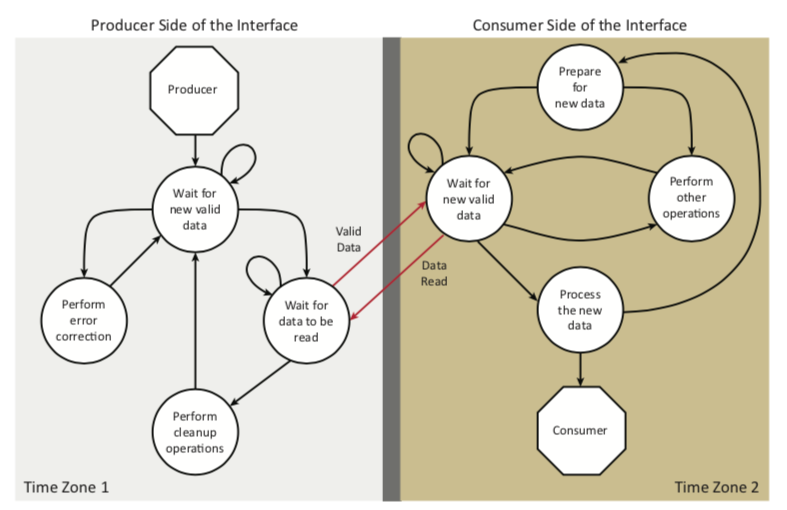
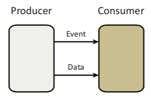
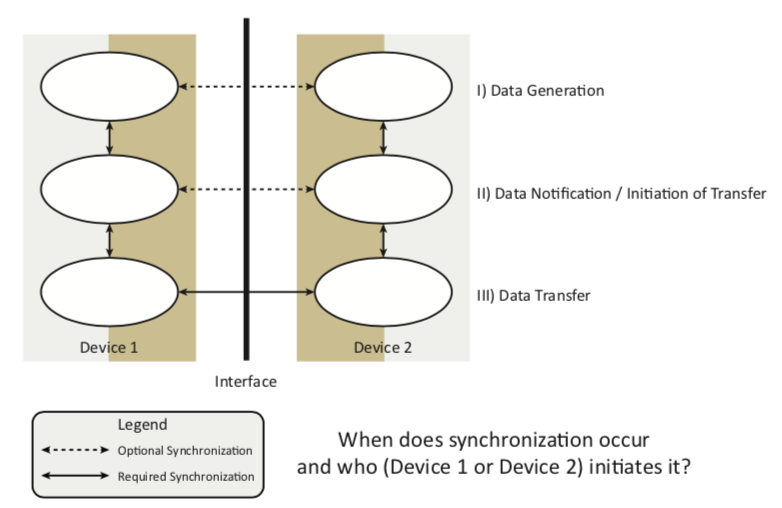
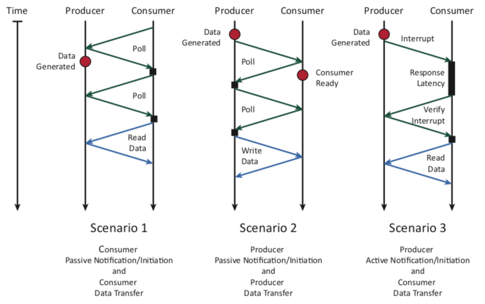
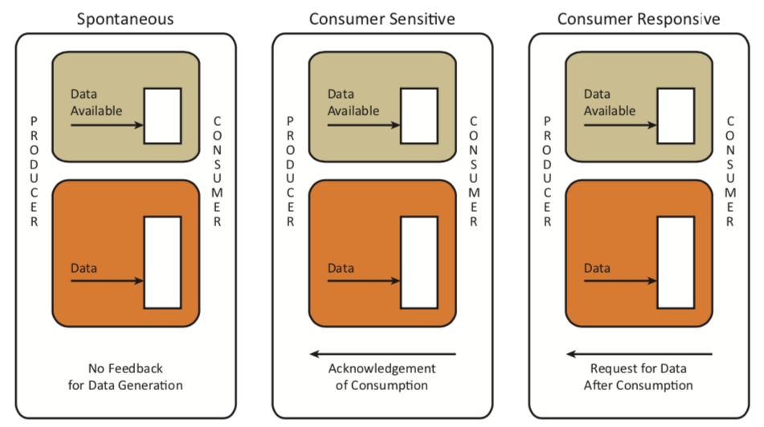
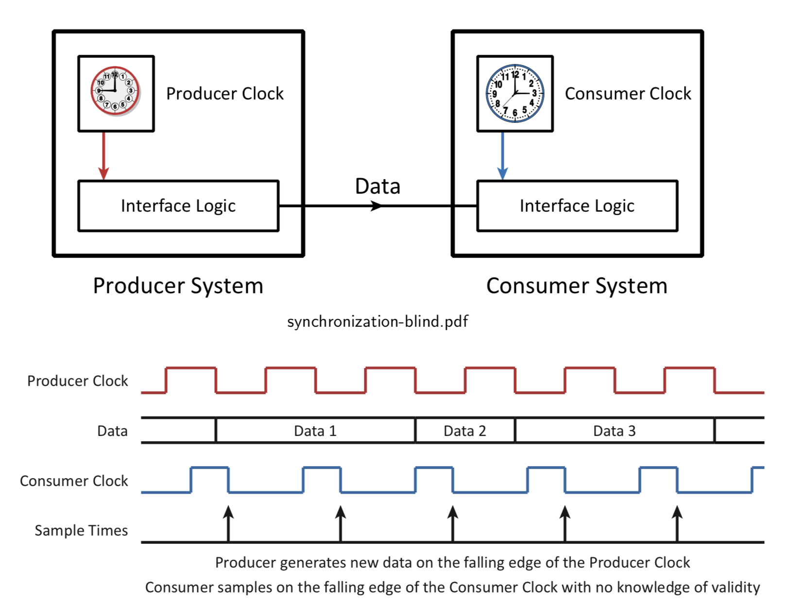
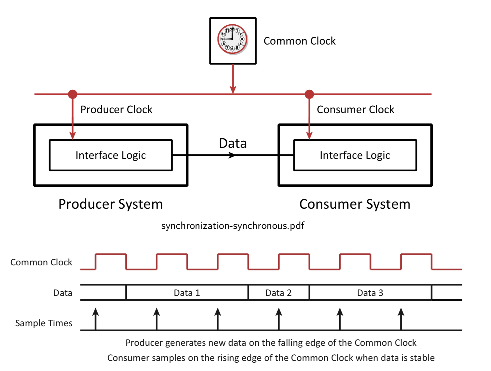
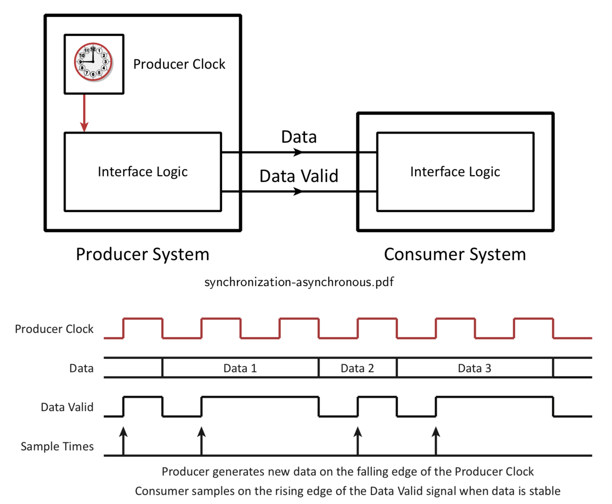

Section 4 - Synchronization, Data Generation, and Data Transfer
Aditya Arora
A Finite State Machine Model of Interface Communication
The two sides of the interface likely utilize different clocks (views of time) and both sides are performing tasks independently except when communicating.

Producer/Consumer Model of Data Transfer
devdrv-software-synchronization
For the purpose of discussion, consider a simple producer/consumer system.
Producer: Either a software or a hardware component responsible for producing data and/or events for the consumer.
Consumer: Either a software or a hardware component responsible for consuming data and/or events provided by the producer.
Data: The state information transferred from the producer to the consumer.
Event: The control information transferred from the producer to the consumer to represent
the occurrence of some activity.
Communicating Events and Data
Event Only: An event occurs (door opens, shaft spins past some registered point, a pro- gram initializes properly) and this occurrence is transferred from the producer to the consumer.
Event and Data: An event occurs (key is pressed, message arrives, processor produces a value to print) so the event and the data are transferred to the consumer.
Data Only: Some data value is produced (or changed) but the consumer is not directly notified of this change. For example, a temperature of an engine block changes and can be read at any time, but the change is not announced to the consumer.
Synchronization Occurs at Several Levels - A Hierarchical Perspective
Synchronization must be considered at several levels. Consider the transfer of data from the following levels:
I) Data Generation: How is the data creation controlled (if it is controlled). How is it started? How is it stopped? Is this done by the producer or the consumer?
II) Data Notification/Initiation of Transfer: Once the producer has the data, how does the producer notify the consumer that it is ready for the data to be consumed? Or, alternatively how does the consumer request the data?
III) Data Transfer: Once the producer has the data and the consumer is ready for the Data, how it the timing (synchronization) of the transfer handled?
Synchronization Hierarchy
The synchronization hierarchy might resemble the one shown below.

Synchronization
Each level in the hierarchy allows for some form of synchronization.
Synchronization: For our purposes, synchronization refers to the interaction required to make two entities (with different views of time) interact.
Synchronization can be classified as follows:
Active Synchronization: One of the entities is capable of forcing a change in the operational characteristics of the other. For example, setting an interrupt signal can force the processor to execute the interrupt service routine.
Passive Synchronization: One of the communicating entities signals a request for service, however the entity receiving the request is not forced to respond.
Synchronization Needs
Consider the relationship between/among the entities:
What is the number of communicating entities (two or more than two)?
Is there a master/slave relationship?
Are the entities equals?
Consider the level of service required:
Active, demand-oriented service. The event at one of the peers must be serviced. This could be implemented as an interrupt.
Passive, request-oriented service. The event at one of the peers may be serviced. One side keeps testing the other to see if an event has occurred.
Examples of Synchronization Scenarios
synchronization-scenarios
Levels of Synchronization
I) Generation
Data generation requires action by the producer. However, the creation of the data can be initiated by either the producer or the consumer.

Spontaneous Sources: Data is produced in the device independent of the actions of the consumer accepting the data.
Consumer Sensitive Sources: Data is produced by the device only after the previous data has been consumed by the consumer.
Consumer Responsive Sources: Data is produced by the device only after requested by the consumer.
II) Notification / Initiation of Transfer
Notification / initiation of transfer may be initiated by either the producer or the consumer.
Consumer Initiated Scenarios: The consumer requests data and then the data becomes ready (or is ready) and the request is completed:
Polling for a key to be pressed and once it is pressed, the data is consumed. (Passive Synchronization)
An interrupt from a printer to indicate that it is ready for the next item to be printed. (Active Synchronization)
Producer Initiated Scenarios: The data is available and then the data is accepted by the consumer and the transfer is completed.
Polling for a printer to become ready for the next character and once it is ready, the data is transferred and consumed.
(Passive Synchronization)
An interrupt from a keyboard to indicate that it has the next character ready for consumption.
(Active Synchronization)
III) Data Transfer
Data Transfer: The exchange of information between two entities that have (potentially) different views of time.
Data transfer considerations include data persistence, time synchronization and clocking, and control signalling:
Data Persistence: How long data is valid for the purpose of transferring between communicating entities.
Time Synchronization and Clocking: How signals representing any data are enabled to make a transfer happen.
Control Signalling: How control information is exchanged between communicating entities.
Introduction to Data Persistence
Persistent Data: Information remains valid until consumer signals that the data has been consumed (processed).
Transient Data: Information is made available to the consumer and only remains valid for a period of time. In most cases, the minimum period of time the data will remain valid is known by the designer.
Most input data falls into the category of transient data
Blind Synchronization – Independent Timing
The consumer just reads the data with no regard for the changes at the producer
Some errors could occur if the data changed too close to the sample time
Some data values may be missed and others may be read multiple times

Synchronous Systems – Common View of Time
Common Clock used by the producer and the consumer
Producer and consumer use different edges to ensure data validity
Data may be sampled multiple times unless transfers limited to one clock period

Asynchronous Systems – Different Views of Time
Producer informs consumer of data validity
Timing can be inferred from data validity
Data is only sampled once

Generalized I/O Overview
The steps necessary to perform an Input/Output (I/O) transfer are the following:
Global Initialization: The steps necessary to set processor and I/O interface parameters for overall system operation. (e.g., initializing interrupt vector tables, specifying port directions, etc.) These steps are executed once.
Transfer Initialization: The steps necessary to set processor and I/O interface parameters to facilitate a specific type of transfer. (e.g., set the memory location to accept (or provide) the data for the transfer, set the block and track number for a disk transfer, etc.) These steps are executed once per transfer.
Later in these notes, Transfer Initialization, in the context of multiple transfers, is referred to as Block Initialization.
Data Transfer: Transferring data includes synchronization before and after the transfer.
Data Transfer Terminology
t_{transfer\; producer}: The time required by the producer to transfer one data unit. This limits the maximum rate at which data can be transferred.
t_{transfer\; consumer}: The time required by the consumer to transfer one data unit. This may be longer or shorter than t_{transfer\;producer} but the actual transfer time will be the maximum of the two parameters.
t_{wait}: The time required by the initiator, usually the processor, to synchronize with the target, usually a device, and recognize the availability of new data. If tight polling is not used, the initiator will be available for other CPU activities during a portion of this time window.
t_{sync-poll}: The time spent by an initiator, usually the processor, to actively poll and detect new data available at a target, usually a device.
t_{sync-intr}: The time spent by an initiator, usually the processor, to interrupt its execution in response to new data available at the target, usually a device.
t_{interdata}: The time interval between the generation of consecutive data blocks at a producer. This time interval is assumed to be fixed although in practice, it may vary.
Estimating Synchronization Times for Block Transfers
Consider the transfer of a group of 256 data units. Let n be the number of data units that are in one block. Synchronization occurs after every block transfer.
n = 1 implies that synchronization occurs once after the transfer of 1 data unit for a total of 256 synchronizations.
n = 256 implies that synchronization occurs once after the transfer of a block of 256 data units for a total of 1 synchronization.
t_{transfer} = max(t_{transfer\; producer}, t_{transfer\; consumer}) t_{wait} is defined as follows:
t_{wait} = \left\{\begin{array}{l}
t_{sync-poll},&\text{Polling}\\
t_{sync-intr}+t_{interdata}, &\text{Interrupt}
\end{array}\right.
Note that the assumption that t_{interdata} is fixed regardless of the size of the block may not always be true. This assumption is simply used to estimate transfer times.